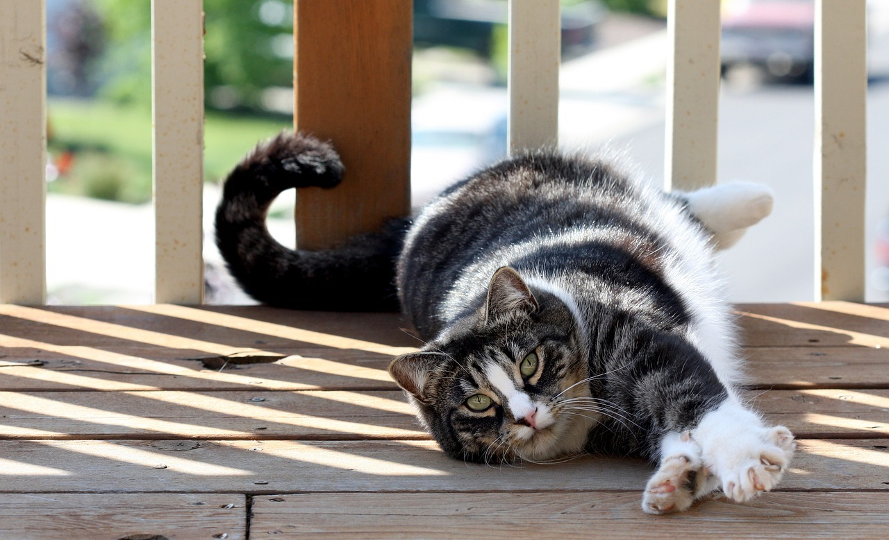
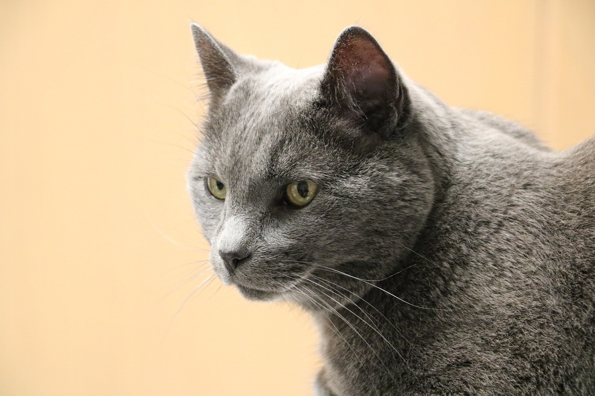
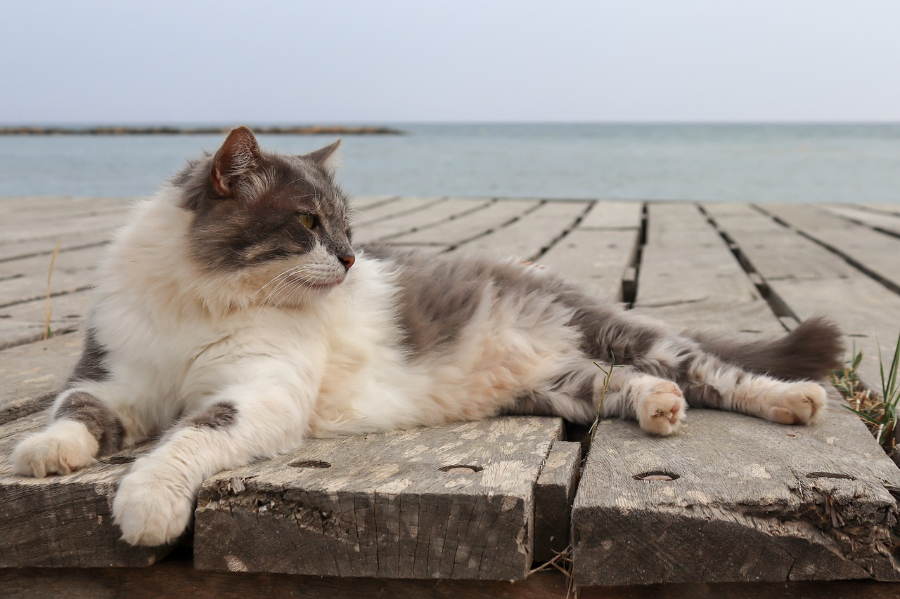
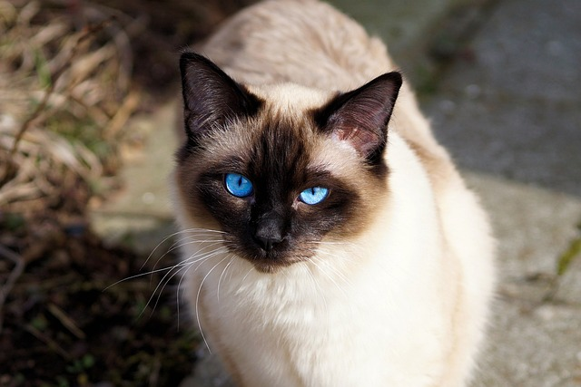
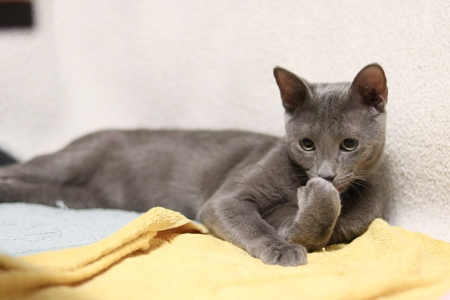
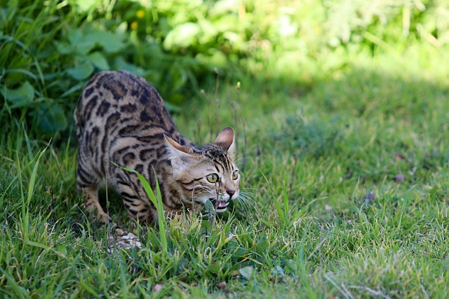

Everything you need to know about cats
table of contents
Top 10 most popular cat breeds in North America!
Here is where you can find fun facts and quick descriptions on the top 10 cat breeds in North America!
- American Shorthair
- Though American Shorthair cats would love to snuggle up on a couch with you, theyre also known as working cats: hearty, muscular, and alert. They typically adapt well to humans and animals alike and are generally well-rounded in temperament.  pixabay
- Domestic Shorthair
- Not to be confused with the American Shorthair, the Domestic Shorthair is often considered to be the “mutt” of cat breeds due to their mixed and unknown heritages. Because of this, Domestic Shorthairs can present a variety of physical attributes, but they are generally medium-sized with round faces, sleek and soft short coats, and can be any mix of colors  pixabay
- Domestic Longhair
- Like Domestic Shorthair cats, Domestic Longhair cats have long hair and are of unknown ancestry. Theyre especially common for this reason—most cats arent purebreds! Also, like their shorthaired friends, they were brought to North America from Europe via ships.  pixabay
- Siamese
- Perhaps one of the most distinctive breeds, Siamese cats are most often cream-colored with grey-brown paws and icy blue eyes. Everything about Siamese is a bit pointier than other breeds, from the large, triangular ears to their delicate paws. They will often have the same grey-brown coloring on their ears and face. Siamese cats are now bred to come in different colors and patterns.  pixabay
- Maine Coon
- Maine Coons have relatively large bodies and lush, heavy coats. They are muscular, sturdy, and simultaneously regal in stature. Their large eyes, significant paws, and high cheekbones distinguish them from other cat breeds.
- Ragdoll
- Large and fluffy, Ragdoll cats are a pointed breed. Cats of pointed breeds have lighter-colored bodies with darker faces, legs, tails, and ears. While their coloring can vary slightly, their blue eyes are distinctive.
- Russian Blue
- Russian Blue cats have short, soft coats in variations of dark grey and silver. They might show faint stripes but are otherwise patternless. Russian Blues have double coats, adding a plush look to their otherwise more delicate frames. They often have yellow-green eyes and a distinct “smile” on their face.  pixabay
- Bengal
- A Bengals marbled coat is their most distinctive feature, but its also impossibly soft and possesses a muscular physique. Though all cats within the breed have different personalities, Bengals are generally active and playful in a kitten-like way, even at an older age. They need pet parents who are willing to keep them busy and entertained and who are tolerant of a cat who may need a more stimulating, enriched home to thrive.  pixabay
- Bombay
- Bombay cats are strikingly panther-like in appearance. They were initially bred in the 1950s by crossing a domestic shorthair with a Burmese cat. American breeders wanted a cat that would take on the body type of a Burmese but with a black coat and copper eyes. Eventually, The Cat Fanciers Association recognized the new breed in the 1970s, and while it is not the most common breed, it continues to have a loyal following.
- Persian
- Persian cats have stocky bodies with flat, slightly scrunched-looking faces. This is one of the qualities people are often so drawn to, but it can lead to the need for additional medical care. They sport long, soft coats in a variety of colors, including white and black. Though they share some physical characteristics with Maine Coons, they are often smaller and weigh between 7-12 pounds.
 pixabay
pixabay
 pixabay
pixabay
 pixabay
pixabay
 pixabay
pixabay